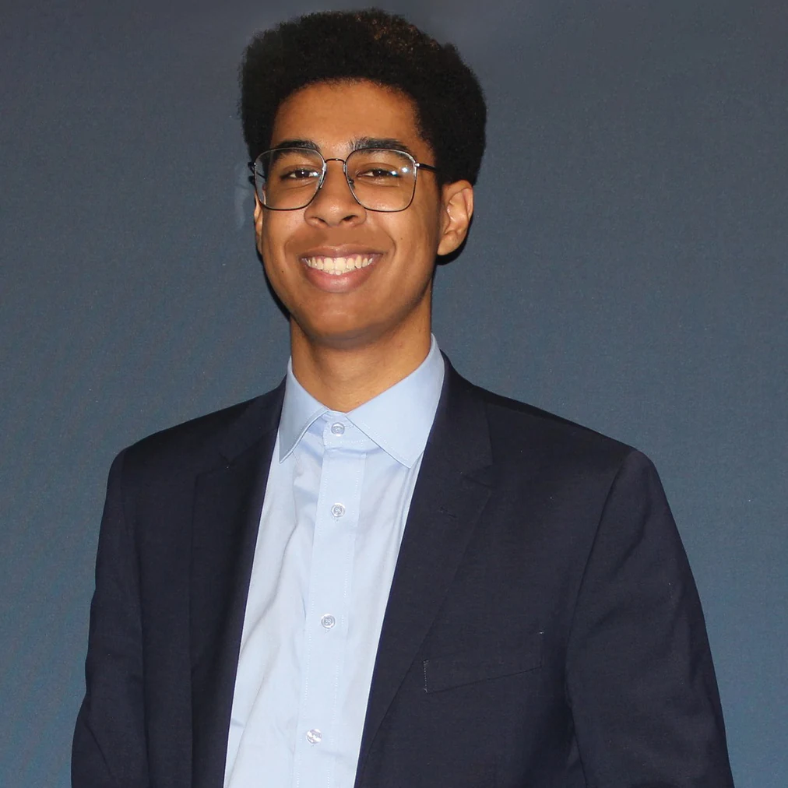

Fostering the future of innovation, safety, and human-centered design.
Connect

Education
Arizona State University, accelerated BS/MS in Human Systems Engineering
- MS, Human Systems EngineeringAugust 2026
- BS, Human Systems Engineering, Design Studies minorMay 2025